第1章 提示链 Prompt Chaining
把复杂任务拆成只做一件事的顺序提示步骤，前一步结构化输出作为后一步输入，以线性组合换取可靠性与可调试性。
一句话定义：把一个复杂任务拆解为一串顺序执行的提示步骤，每步只做一件事，上一步的结构化输出作为下一步的输入。 解决什么问题：单条提示任务过载导致质量崩塌、错误无法定位 ｜ 适用场景：流程固定、步骤可枚举的多阶段任务（抽取→校验→总结、大纲→撰写→润色）｜ 核心机制：步骤单一职责 + 结构化中间结果 + 逐步校验与重试 ｜ 代价：延迟线性叠加、错误会沿链条传播、步骤接口需要人工设计。
1.1 模式概述
1.1.1 问题背景：为什么需要这个模式
给一个大模型下达这样一条指令："阅读这份 50 页的合同，抽取全部关键条款，对每条做法律风险评估，输出中文摘要，再翻译成英文。"这条提示几乎注定失败，但失败的方式值得拆开看。第一，注意力稀释：模型要在一次前向计算中同时照顾抽取的完整性、评估的专业性、摘要的凝练与翻译的忠实，任何两种要求发生冲突时它只能随机取舍。第二，错误不可归因：输出里金额抄错了一个数，你分不清是抽取错了、评估时看错了还是摘要时手滑了，唯一的调试手段是整条重跑。第三，上下文挤占：50 页原文加上四类任务的说明与输出示例，轻松挤爆上下文窗口，模型被迫"省着记"，遗漏成为常态。
问题的本质不是模型不够聪明，而是我们把四种本可以独立验证的能力压进了同一次调用。软件工程早就给出过答案：把大函数拆成小函数，每个函数单一职责、接口明确、可以单独测试。提示链就是这个思想在 LLM 应用上的直接移植——把"一条巨提示"拆成"多个小提示"，用确定性的程序把它们串起来，每一步只解决一个可以被独立验证的子问题。
1.1.2 核心机制：它如何工作
一个提示链由三样东西构成：步骤序列、步骤间的数据契约、以及穿插其间的校验点。执行时程序按顺序调用模型：第一步的提示里包含原始输入与本步的输出格式要求（通常是 JSON schema）；模型返回后，程序先做结构校验（字段齐全吗、类型对吗、枚举值合法吗），通过则把结果写入一个逐步增长的状态对象，再把其中本步需要的部分注入下一步的提示。校验失败则携带错误信息重试，重试预算耗尽就走失败路径——终止链条并报警，或者降级用保守默认值。
两个设计要点决定了链条的成败。其一，每步必须单一职责：一步只承载一类判断，判断标准可以在提示里写清楚、在输出里验证清楚。其二，中间结果必须结构化且自包含：步骤之间不共享对话历史，每个提示都要把"它需要知道的一切"显式带进来——这既是链可靠的前提，也是它可调试的原因：任何一步的输入输出都能单独取出来人工检查。

1.1.3 与相邻模式的关系与组合
提示链是多数其他模式的骨架。路由（第 2 章）决定"进哪条链"或在链中选择分支；并行化（第 3 章）让链的某些环节扇出并发再汇合；反思（第 4 章）本质上是在链尾追加"自查并修订"的步骤；规划（第 6 章）生成的计划，落实时往往就是一条动态生成的链；异常处理（第 12 章）给链上每个步骤加装重试与回滚。反过来说，当你发现自己在链外写大量 if-else 决定"下一步跑不跑、跑哪个"，那是路由或规划的职责范围到了，不该再往链里硬塞。Anthropic 的分类法把提示链列为最基础的工作流模式，其他工作流几乎都是它的组合与变奏。
1.2 源起：它从哪里来
提示链的源头是 2022 年谷歌研究部的两篇论文。当时大模型多步推理屡屡"一步错、满盘输"，思维链（CoT，Wei 等）先证明：把推理摊开成显式中间步骤，复杂推理可靠性大幅提升。同年五月的 Least-to-Most（Zhou 等）再进一步：先分解为由简到繁的子问题，再顺序求解、后步复用前步答案——这正是"分解＋顺序求解＋中间传递"的直接原型，与本章只差"由程序编排"这层工程外皮。此后 LangChain 把链变成工程对象，结构化输出补上接口短板，Anthropic 在 2024 年底把它定名为最基础的工作流模式。演化细节并入 1.5 节。
| 年月 | 事件 | 提出者/机构 | 出处 |
|---|---|---|---|
| 2022-01 | 思维链（CoT）：显式中间步骤大幅提升复杂推理可靠性 | Wei 等，Google Research | arXiv:2201.11903，NeurIPS 2022 |
| 2022-05 | Least-to-Most：分解为子问题、由简到繁依次求解 | Zhou 等，Google Research | arXiv:2205.10625，ICLR 2023 |
| 2022-10 | LangChain 开源发布，chain 成为可组合的工程对象 | Harrison Chase，LangChain | 官方文档 |
| 2023-06/08 | OpenAI 上线 function calling 与 JSON mode，结构化接口成型 | OpenAI | function calling 指南 |
| 2024-12 | 《Building Effective Agents》将 Prompt Chaining 定名为最基础工作流模式 | Anthropic | 官方工程博客 |
1.3 发挥的作用：为什么重要
提示链的价值可以归结为四个工程属性的提升。可靠性：每一步的任务复杂度降低了，模型在单一职责上的表现远好于多任务混跑，这是 CoT 与 Least-to-Most 在论文里反复验证过的规律在工程上的延续。可调试性：错误被局部化到具体步骤——抽取错了改抽取的提示，评估错了改评估的提示，而单条巨提示的失败只能整体重跑碰运气。可测试性：每个步骤都可以用固定输入做单元测试，提示的任何修改都能跑回归用例，这在"提示即代码"的实践里是 CI 的基础。上下文经济：每步只注入该步需要的原文片段与中间字段，50 页的合同不必全程驻留上下文，成本与遗漏率同时下降。
还有一个容易被低估的作用：链是成本与延迟的可预估结构。三个步骤、每步输入输出规模可估，整条链的 token 花销与耗时就能提前算清、按步骤归因。这种确定性是后续一切优化（缓存哪步、并行哪步、哪步换便宜模型）的前提。
1.4 实际应用与案例
- 合同审阅流水线：字段抽取→风险条款标注→审阅摘要三步链。关键设计点是第一步就把金额、期限、终止条款抽成 JSON，后续步骤不再碰原文全文，只在需要溯源时保留条款引用锚点。
- 客服工单处理：意图与要素识别→信息补全判断→解决方案生成→回复语气润色。每步一个模型调用，最后一步用不同的温度与措辞约束，把"解决问题"和"好好说话"拆开。
- 长文内容生产：大纲生成→分节撰写→事实核查→全文润色。事实核查一步单独成链段，是内容场景里性价比最高的拆分，比让模型"一次写对"现实得多。
- 数据抽取入库：非结构化文本→字段抽取→类型与枚举校验→规范化输出。校验不通过的记录进入修复重试，仍不通过则落异常表，入库数据始终干净。
- 代码变更流水线：需求澄清→实现方案→代码生成→测试用例生成。把"写代码"和"写测试"拆开，避免同一次生成里测试迁就实现的自我印证。
- 多语种发布流水线：翻译→术语一致性检查→目标语言风格润色。术语检查步骤持有术语表并逐条比对，是典型的"带外部知识的小步骤"。
真实世界实例
Dify（开源 LLM 应用开发平台）的可视化工作流。Dify 的 Workflow 与 Chatflow 让用户在画布上把 LLM 节点、代码节点、知识检索节点按序连线，前一个节点的输出变量经显式引用注入下一个节点的提示，官方文档将这一定位为"用结构化、可重复的过程编排模型、工具与逻辑"。节点级配置提供失败重试、错误分支与 fail-fast 三种错误处理策略——正是本章"步骤契约 + 校验 + 失败路径"的低代码形态。（来源：Dify 官方文档，https://docs.dify.ai/en/use-dify/build/workflow-chatflow）
扣子（Coze）工作流。扣子官方文档说明工作流"通过可视化的方式，对插件、大语言模型、代码块等功能进行组合，从而实现复杂、稳定的业务流程编排"，推荐用于步骤较多、对输出准确性与格式有严格要求的场景（如旅行规划、报告分析）；其大模型节点支持指定 JSON 输出格式并引用上游节点的输出参数，节点异常时可配置重试、返回设定内容或转入异常分支，与本章的结构化中间结果与显式失败路径设计一一对应。（来源：扣子官方文档，https://www.coze.cn/open/docs/guides/agent_workflow）
Anthropic《Building Effective Agents》中的 Prompt Chaining。Anthropic 2024 年 12 月的工程指南把提示链列为五种基础工作流之首：把任务分解为顺序 LLM 调用，并在中间步骤插入程序化检查门（gate）确认流程仍在正轨；官方给出的典型用法是"生成营销文案→翻译成不同语言"与"写文档大纲→检查大纲是否达标→按大纲成文"。Anthropic 同时明确这是以延迟换准确率的交易，只适合能干净分解为固定子任务的情况。（来源：https://www.anthropic.com/engineering/building-effective-agents）
1.5 深度讲解
机制细节：步骤边界的划分。 划分步骤有一条可操作的经验法则：如果一个提示里需要向模型解释两类彼此独立的质量标准，就该拆。比如"抽取金额并判断该条款是否对己方不利"，抽取的正确标准是"与原文一致"，判断的标准是"商业语义"，两套标准塞在一个提示里，模型就会顾此失彼。拆开的反向检验是中间数据的体积：如果步骤 A 传给步骤 B 的中间 JSON 比 A 的最终输出还长，说明拆得过碎，接口成本已经吃掉收益，应该合并。步骤接口应当先于提示设计——先写清楚每步输入输出的 schema，再写提示正文，顺序反了很容易滑向"每步都在即兴发挥"。
机制细节：中间表示与上下文裁剪。 步骤间传递什么，比步骤怎么写更重要。默认原则是最小传递：只传下游需要的字段，不传整个中间结果，更不传原始全文。但有两个例外。一是溯源需要：当下游输出需要引用原文位置（如"第 7 条第 2 款"），上游就必须保留引用锚点字段，否则下游只能编造引用。二是语义完整性：抽取"风险条款"时如果只传风险条款本身，评估步骤就失去了上下文对比的对象（同一个条款，在没有免责条款保护时是高风险，有保护时是中风险），此时应传"风险条款 + 关联条款"。上下文裁剪的本质是在成本与信息完整性之间逐字段权衡，没有普适答案，只有可辩护的取舍。
变体谱系：静态链、动态链与带分支的链。 静态链的步骤在开发期固定，是最基本形态，优点是成本可预估、可整体缓存、可画成一张流程图给非工程师审。动态链的步骤序列在运行时决定：某步的输出触发条件步骤——典型如风险检查发现"高风险"才追加"法条引用核查"步骤，或长文按章节数动态生成撰写步骤数。动态链的纪律是：分支逻辑写在代码里而不是写在提示里，且动态性必须可枚举可测试，否则你已经在不知不觉中需要一个规划模式了。第三种是带并行分支的链：主干保持顺序，局部环节扇出为多路并发（如同一份摘要同时送两个独立的事实核查器），归并后在下一节点汇合——这是第 3 章的主题，此处只需知道它是链的自然扩展而非替代。
演化对照：从论文技巧到工程共识的三次接力。 学术期（2022）证明了顺序分解对可靠性的价值，但论文里的"传递"发生在同一次生成内部，没有回答中间结果怎么跨调用传递；框架期（2022 末至 2023）把链变成程序结构——LangChain 的 chain 抽象加上 function calling 与 JSON mode 的结构化输出，接口短板补齐；共识期（2024 末起）以 Anthropic 的分类法为代表，行业统一术语与边界——提示链是工作流不是智能体，检查门（gate）与"延迟换准确率"的交易边界都写进了官方指南。对照这条线能看清本章每个部件的来历：步骤分解来自 CoT/LtM，数据契约来自结构化输出能力，校验与失败路径来自工程实践的反推。
机制细节：错误传播与检查点。 链的错误传播有放大效应：上游漏抽一个字段，下游风险检查会基于残缺信息给出"无风险"的错误安心，错误在链条后段才显现，且表现为"看起来合理的错误答案"而非显式异常。对抗传播有三条纪律。第一，fail-fast：链内任何结构校验失败且重试耗尽后立即终止并报警，适用于内部流水线——宁可没有结果，不要错误结果。第二，隔离降级：失败步骤填入保守默认值并在状态里标记 degraded，链继续跑，适用于面向用户的实时链——用户宁可看到"风险评估暂不可用"也不愿看到 500。第三，重试预算：每步最多 N 次带错误反馈的重试，整链设全局 token 与时间预算，防止"每步都重试三次"的雪崩组合。检查点（checkpoint）是配套机制：每步结果落盘，链条可从任意断点恢复，这既是异常处理的物资基础，也让"改了第二步的提示后只重跑第二、三步"成为日常开发体验。
定量视角：链式可靠性算术——检查点与 fail-fast 不是风格，是数学。 设每步一次通过的可靠率为 r，n 步链若不做任何校验直接串联，端到端成功率是 r 的 n 次方：0.95 的五步链只剩约 77%（0.95^5≈0.774），0.90 的五步链只剩约 59%——哪怕每步都"相当可靠"，整体仍有两到四成的概率产出某处出错的"成功结果"，而且错误藏在链条后段才显形。由此回看"检查点 + fail-fast + 带反馈重试"三件事：重试把单步有效可靠率从 r 提到 1−(1−r)^(k+1)（k 为重试次数，r=0.9、k=2 时约 0.999），fail-fast 保证坏中间结果不被乘进下游。算术同时划出了拆分的边界：单步可靠率 0.8 的链拉到 7 步，端到端已不足 21%（0.8^7≈0.21）——此时该修的是单步质量，不是继续加步骤。
定量证据：分解的可靠性红利与结构化契约的可重试性。 学术侧的硬数字：CoT 论文在 GSM8K 上把 PaLM 540B 从标准提示的 17.9% 提到 56.9%（+39 个百分点，arXiv:2201.11903 表 2）；Least-to-Most 在 SCAN 组合泛化任务上只用 14 个示例就达到约 99% 的准确率，而同一任务上思维链提示只有 16%（arXiv:2205.10625）——"分解 + 顺序传递"的可靠性红利有据可查。工程侧：OpenAI 2024 年 8 月推出的 Structured Outputs（strict 模式）在复杂 JSON schema 遵循评测中拿到 100%，同一评测里 gpt-4-0613 靠提示词只有不到 40%（官方公告）。这组数字解释了结构化输出契约的真正价值：它保证的是"结构合法"，把 schema 违规从静默的数据污染变成一个必然被解析层捕获的异常——本节 run_step 里 except ValueError 的带反馈重试才有确定的着力点。但契约管不住"值"层面的错误（枚举选了合法却错误的项、引用了不存在的条款），社区实测中 strict 模式也有被"带偏"破格的案例，所以校验与降级仍然不可省。
反直觉：可靠性来自校验与重试，不是来自步骤数量。 直觉上"拆得越细、每步越简单，整体就越稳"。链式可靠性算术给出的工程事实相反：在无校验的串联里，每多一步都是给端到端成功率再乘一次 r，碎链比粗链更脆弱；拆分对可靠性的真实贡献只有一条——单一职责把每步的 r 本身抬高了。同理，别把"模型没有报格式错误"当成"这步对了"：结构合法与语义正确是两层，语义校验（枚举合法性、引用锚点存在性）必须独立于生成者自己报告。
1.5.1 怎么用：运用判断
出现以下信号时，提示链大概率是正确的第一选择：任务能被枚举为三个以上固定阶段，且每个阶段的输入输出都能写出 schema；不同阶段的提示需要彼此冲突的质量标准（又要忠实原文、又要商业判断）；错误定位成本高到"整条重跑"不可接受；流程需要给非工程师审计（链是可画在一张图上的）。反过来的信号也明确：单次调用已能稳定完成、步骤边界因输入类型而漂移、或任务需要强整体一致性——分别对应"别用""换规划""慎拆"。
| 维度 | 提示链（本章） | 单条长提示 + CoT | 规划模式（动态分解） |
|---|---|---|---|
| 步骤从哪来 | 开发期固定、人工设计 | 全在一次生成里隐式展开 | 运行时由模型生成计划 |
| 错误能否定位 | 精确到步，可断点重跑 | 不可归因，只能整体重试 | 可归因到子任务，但计划本身可能错 |
| 适合 | 流程稳定、接口可枚举 | 一次能装下、无需复用中间结果 | 步骤因输入而变、无法预先枚举 |
落地三步：第一，写下每步的输入输出 schema（这一步比写提示重要），确认每步单一职责；第二，实现"调用 → 结构校验 → 失败带反馈重试 → 预算耗尽 fail-fast"的最小骨架（可直接抄本节片段二），每步加检查点落盘；第三，跑真实样本测出每步的 r，用 r^n 算一遍端到端成功率——低于业务要求就先修最弱的一步，而不是加步骤。
失效模式与反模式。 第一个反模式是碎链：步骤多到每个提示都要花一半篇幅重建背景，接口开销超过收益，典型症状是链里出现了"格式整理"这种不涉及语义的步骤——那是代码该干的事，永远不要用模型调用做字符串拼接。第二个是把链当万能药：任务需要根据中间结果选择不同路径，开发者硬写成线性链，再用一层 if-else 在外面补分支，结果分支逻辑散落在提示与代码两处，无人能完整说清执行路径——这是路由或规划模式的领地。第三是格式漂移：模型在第 200 次调用时悄悄把 "risks" 写成 "risk_items"，或者把字符串数组写成逗号拼接字符串。漂移是概率系统的本性，唯一可靠的对策是每步校验，并且把校验失败率做成监控指标——漂移率突增通常意味着上游模型被悄悄换了版本。第四是隐式上下文依赖：第三步的提示里出现"如上所述"，但步骤之间并不共享对话历史，模型只能靠幻觉补全。链条中的每个提示都必须自包含，review 时可以专门搜"如上""同前"这类词。
何时不要用。 任务单步就能可靠完成时，链是纯粹的过度工程——两步链的延迟、成本与失败面都是单步的两倍以上。步骤边界无法稳定枚举时（每类输入都会走出不同的流程），提示链会退化成一堆特判，此时应使用规划模式让模型自己分解。强创造性的整体任务（一篇有统一声音的长文）也要慎拆：链式分解天然打断全局一致性，若必须拆，需要在末步安排全文性的统一润色来回收整体感。
1.6 工程落地：核心源码与讲解
1.6.1 框架无关实现（按序拼接即完整可运行）
下面把一条三步合同审阅链（抽取 → 风险检查 → 摘要）的主程序拆为 4 个片段：环境接入 → 校验与重试引擎 → 步骤定义 → 编排与入口。按序拼接即完整可运行程序；错误路径（结构校验失败带反馈重试、重试预算耗尽 fail-fast、检查点落盘）完整保留。
"""第1章 提示链：合同审阅流水线（字段抽取 -> 风险检查 -> 摘要生成）。
本节 4 个片段按序拼接即完整可运行程序。环境变量：AGENT_LLM_API_KEY（必填）、
AGENT_LLM_BASE_URL / AGENT_LLM_MODEL（可选）。
"""
from __future__ import annotations
import json, os, sys
from openai import OpenAI
client = OpenAI(
base_url=os.environ.get("AGENT_LLM_BASE_URL", "https://api.openai.com/v1"),
api_key=os.environ["AGENT_LLM_API_KEY"],
)
MODEL = os.environ.get("AGENT_LLM_MODEL", "gpt-4o-mini")
def llm(prompt: str, system: str = "", temperature: float = 0.3) -> str:
"""调用大模型，返回补全文本。"""
messages = [{"role": "system", "content": system}] if system else []
messages.append({"role": "user", "content": prompt})
resp = client.chat.completions.create(model=MODEL, messages=messages, temperature=temperature)
return resp.choices[0].message.content or ""
▸ 代码怎么读：这个片段只做"模型接入"，与链逻辑零耦合。
OpenAI(...)只读环境变量、不硬编码 key，所以同一份代码能指到任何 OpenAI 兼容网关（改AGENT_LLM_BASE_URL即可）。llm()的temperature默认 0.3 是个折中：链的中间步骤要稳定（建议各步骤显式传 0.0~0.2），只有创意性末步才值得调高——复制这个函数到自己的项目时，第一个该改的就是把温度做成按步骤配置。from __future__ import annotations必须留在片段一首行，它让整个拼接文件的类型注解变成惰性求值。
class ChainStepError(RuntimeError):
"""重试预算耗尽仍未通过校验，链条 fail-fast 终止。"""
def extract_json(text: str) -> dict:
"""从模型输出提取 JSON 对象；失败抛 ValueError（JSONDecodeError 是其子类），成为可重试异常。"""
text = text.strip()
if text.startswith("`" * 3): # 剥掉模型输出外层的 Markdown 代码围栏（若有）
text = text.lstrip("`").removeprefix("json")
start, end = text.find("{"), text.rfind("}")
if start == -1 or end <= start:
raise ValueError("输出中未找到 JSON 对象")
return json.loads(text[start : end + 1])
def parse_checked(text: str, keys: tuple) -> dict:
"""extract_json + 必需字段校验：非 JSON 对象、字段缺失或为空都抛 ValueError。"""
if not isinstance(data := extract_json(text), dict):
raise ValueError("输出不是 JSON 对象")
missing = [k for k in keys if k not in data or data[k] in (None, "", [])]
if missing:
raise ValueError(f"缺少必需字段：{', '.join(missing)}")
return data
def run_step(name, build_prompt, validate, state: dict, max_retries: int = 2) -> dict:
"""执行链条中的一步：提示 -> 调用 -> 校验 -> 写入 state；失败带反馈重试，预算耗尽抛错。"""
last_error = ""
for attempt in range(1, max_retries + 2):
note = f"\n\n上次输出未通过校验：{last_error}，请修正后按格式重新输出。" if last_error else ""
try:
state[name] = validate(llm(build_prompt(state) + note))
except ValueError as exc: # JSONDecodeError 是 ValueError 子类，同样在此被重试
last_error = str(exc)
print(f"[{name}] 第 {attempt} 次尝试校验失败：{last_error}")
continue
with open(f"checkpoint_{name}.json", "w", encoding="utf-8") as fh:
json.dump(state[name], fh, ensure_ascii=False, indent=2) # 检查点落盘，可断点重跑
return state
raise ChainStepError(f"步骤 {name} 在 {max_retries + 1} 次尝试后仍未通过校验")
▸ 代码怎么读：这是全链的心脏——校验、重试、fail-fast、检查点四个机制全部压在这三个函数里。
extract_json故意只抛ValueError一种异常：json.JSONDecodeError本身是它的子类，所以run_step里一个except ValueError就能同时接住"根本没输出 JSON"和"JSON 语法坏了"两类失败，这是结构化契约把静默错误变成可重试异常的关键一笔（见 1.5 节定量证据）。max_retries=2即最多 3 次尝试：按 r=0.9 算，3 次后单步有效可靠率约 0.999，再加重试只是花延迟买小数点后第三位。note变量把上一轮的具体错误拼回提示，让重试是"带反馈的修正"而不是"原样再抽一次"。checkpoint_{name}.json以步骤名落盘——改了第二步提示后，第一、二步的 checkpoint 还在，可以只重跑受影响的步骤。接入 Pydantic 时，把parse_checked换成Model.model_validate_json并捕获ValidationError即可，其余不动。
def step_extract(contract: str):
"""第 1 步 字段抽取：提示构造与校验函数成对返回，契约同源。"""
def build_prompt(_):
return ("从合同文本抽取关键信息，只输出 JSON：parties（双方全称数组）、amount（总金额含币种）、"
"term_years（年数）、termination_clause（单方终止条款原文）。\n\n合同文本：\n{contract}")
def validate(raw: str) -> dict:
return parse_checked(raw, ("parties", "amount", "term_years", "termination_clause"))
return build_prompt, validate
def step_risk(state):
"""第 2 步 风险检查：overall 枚举校验是防格式漂移的关键。"""
def build_prompt(s):
return ("基于关键字段评估合同风险，只输出 JSON：risks（数组，每项含 clause/level/reason）、"
'overall（取值限定 "高"/"中"/"低"）。重点：单方终止权、违约对等性、争议解决。\n'
f"关键字段：{json.dumps(s['extract'], ensure_ascii=False)}")
def validate(raw: str) -> dict:
data = parse_checked(raw, ("risks", "overall"))
if data["overall"] not in ("高", "中", "低"): # 枚举非法 -> ValueError -> 触发带反馈重试
raise ValueError(f"overall 取值非法：{data['overall']}")
return data
return build_prompt, validate
def step_summary(state):
"""第 3 步 摘要生成：只消费上游结构化字段，不回读全文。"""
def build_prompt(s):
return ("基于关键字段与风险检查结果，写不超过 150 字的审阅摘要，"
"只输出 JSON（字段 summary），须点名最高风险项。\n"
f"关键字段：{json.dumps(s['extract'], ensure_ascii=False)}\n"
f"风险检查：{json.dumps(s['risk'], ensure_ascii=False)}")
def validate(raw: str) -> dict:
return parse_checked(raw, ("summary",))
return build_prompt, validate
▸ 代码怎么读：三个步骤工厂都返回
(build_prompt, validate)二元组——提示与校验器放在同一个闭包里定义，保证"要求什么格式"和"验什么格式"永远同源，这是接口先于实现的最小实践。注意每个提示的自包含性：第 2、3 步只通过s['extract']、s['risk']注入上游的结构化字段，不共享对话历史，所以任何一步的输入都能单独打印出来人工检查。overall not in ("高","中","低")这行枚举校验是防漂移的样板：模型在第 500 次调用时把"高"写成"高风险"，就在这里被拦下并重试，而不是流进下游。要加第 4 步（比如"法条核查"），照抄一个step_x工厂并注册进片段四的steps元组即可，run_step引擎一行不改。
import json, sys # 运行时依赖；与片段一重复的导入在拼接时幂等
def run_chain(contract: str) -> dict:
"""整链编排：顺序执行三步，任何一步重试耗尽即抛 ChainStepError（fail-fast）。"""
state: dict = {"contract": contract}
steps = (("extract", step_extract(contract)), ("risk", step_risk(state)),
("summary", step_summary(state)))
for name, (build_prompt, validate) in steps:
state = run_step(name, build_prompt, validate, state)
return state
if __name__ == "__main__":
contract_text = (
"甲方：星野科技有限公司；乙方：云帆数据服务有限责任公司。"
"合同总金额人民币 120 万元，服务期限 3 年，自 2026 年 1 月 1 日起。"
"乙方有权提前 30 天书面通知甲方后单方终止本合同且无需承担违约责任，一切争议提交甲方所在地仲裁委员会仲裁。"
)
try:
print(json.dumps(run_chain(contract_text), ensure_ascii=False, indent=2))
except ChainStepError as exc: # fail-fast：宁可没有结果，不要未经校验的错误结果
sys.exit(f"链条终止：{exc}") # 传字符串时打印到 stderr 并以退出码 1 结束
▸ 代码怎么读：
steps元组的顺序就是执行顺序，run_chain自身只有 6 行——编排层薄，是链可维护的标志。这里选了 fail-fast 而不是降级，因为合同审阅是内部流水线：宁可不产出，也不能让"risk 步校验失败后拿默认值"的审阅结论流进决策；若你的链是面向用户的实时服务，把except ChainStepError分支换成填保守默认值并在响应里标注 degraded（对应 1.5 节"隔离降级"）。state是唯一贯穿全链的对象，run_step原地写入后返回它——三步跑完，json.dumps(state)打出来的就是一次审阅的完整轨迹，也是排查时最该先看的东西。
1.6.2 框架差异速览（LangChain LCEL）
从本版起，原 LangChain LCEL 完整程序收敛为速览表：框架在这里只做两件事——把"状态逐步增长"与"声明式重试/降级"表达得更短，骨架判断与 1.6.1 完全一致。基于 langchain-core 0.3.x / langchain-openai 0.2.x（API 以所用版本官方文档为准，见 LangChain 官方文档）：
| 本章概念 | LangChain（LCEL）对应 | 一句话差异 |
|---|---|---|
| 顺序串联三步 | prompt \| model \| parser 管道 |
用 \| 运算符组合 Runnable，链对象本身可复用、可缓存 |
| 状态逐步增长 | RunnablePassthrough.assign(fields=…).assign(risk=…) |
每步把输出并入状态字典，替代手写 state[name] = result |
| 单步重试 | .with_retry(stop_after_attempt=3, retry_if_exception_type=(ValueError,)) |
声明式重试；校验函数抛 ValueError 即触发，但不回注错误信息 |
| 摘要步降级 | .with_fallbacks([备用模型链]) |
主模型失败自动切备用链，对应本章"隔离降级"语义 |
| fail-fast | 校验 RunnableLambda 抛异常 | 异常穿透整链终止，等价于片段二的 ChainStepError |
| 模型接入 | ChatOpenAI(base_url=…, api_key=…) |
同样只读环境变量，与片段一的 llm() 等价 |
需要特别说明的差异：LCEL 的 with_retry 与 with_fallbacks 比手写循环短得多，但"带错误反馈的重试"（把校验错误拼回下一轮提示）框架没有现成原语，仍需自定义 RunnableLambda——这正是 1.6.1 片段二保留手写引擎的价值。若流程会动态生长（条件步骤、循环修订），从 LCEL 迁到 LangGraph（状态图）比继续叠管道更顺。
1.6.3 生产化改造清单
- 错误处理：把
ChainStepError分类为可重试（限流、超时）与不可重试（schema 漂移、内容违规），分别接指数退避重试与人工介入队列。 - 超时：每个模型调用设显式超时；整链设全局预算（时间与 token 双口径），超预算立即终止。
- 并发：多请求并发跑链时用有界信号量控制对模型端点的并发数，避免触发限流。
- 缓存：以"步骤名 + 提示内容哈希"为 key 缓存中间结果；改了第二步提示后，第一步命中缓存直接跳过。
- 可观测：每步记录输入哈希、输出 token 数、校验失败次数与重试次数；校验失败率突增是模型版本漂移的首要信号。
- 成本控制：按步骤统计成本并设预算告警；可结合第 2 章路由，把抽取这类简单步骤切到便宜模型。
- 检查点存储：生产环境把 checkpoint 落到对象存储或数据库（而非本地文件），并带过期策略与 PII 处理。
1.7 概览 / 核心要点 / 结论
1.7.1 本章小结
提示链把"一条装不下的巨提示"变成"一串装得下的小提示"：每个步骤单一职责、以结构化数据为契约、以校验和重试为护栏、以检查点为可恢复性兜底。它的学术根源是思维链与 Least-to-Most Prompting 对"顺序分解"价值的证明，工程成熟由 LangChain 与结构化输出能力推动，最终在 Anthropic 的工作流分类中被定名为最基础的模式。它的代价同样明确：延迟线性叠加、错误沿链传播、接口设计需要投入。大多数智能体系统应当从一条最笨的提示链开始，让失败先暴露出来，再决定引入哪一种更重的结构。
1.7.2 核心要点
- 步骤单一职责：一个提示里出现两套互不相干的质量标准，就该拆成两步。
- 接口先于实现：先定每步输入输出 schema，再写提示正文。
- 中间结果最小传递，但保留溯源锚点与必要的语义上下文。
- 每步必有校验；格式漂移是概率系统的常态，不是偶发 bug。
- 错误处理三选一要显式：fail-fast、隔离降级、重试预算，且整链设全局预算。
- 检查点让链可恢复、可增量重跑，是改提示不返工的前提。
- 链外的 if-else 多到说不清执行路径时，说明你需要的是路由或规划，不是更长的链。
1.7.3 结论
提示链是智能体工程里的"函数分解"：朴素、古老、却撑起了几乎所有可靠系统的第一层骨架。它的全部技巧在于克制——克制拆分的粒度，克制每步传递的信息，克制对动态性的欲望。先用链把流程跑通并让每一步都可验证，你的系统就有了被继续优化的资格。
1.8 延伸阅读与参考链接
论文
- 思维链提示（Chain-of-Thought Prompting），Wei et al., Google Research, 2022，NeurIPS 2022：arXiv:2201.11903
- Least-to-Most Prompting（由简到繁的分解式求解），Zhou et al., Google Research, 2022，ICLR 2023：arXiv:2205.10625
- ReAct：语言模型推理与行动的协同（提示链通往工具使用的桥梁），Yao et al., 2022，ICLR 2023：arXiv:2210.03629
官方文档与规范
- LangChain 官方文档（LCEL 链式组合与 RunnablePassthrough.assign 状态增长）：https://docs.langchain.com
- LangGraph 官方文档（以状态图表达步骤编排与条件流转）：https://langchain-ai.github.io/langgraph/
- OpenAI function calling 指南（步骤间数据契约的工程保障）：https://platform.openai.com/docs/guides/function-calling
- CrewAI 官方文档（多步任务编排的另一种框架表达）：https://docs.crewai.com
案例来源
- Anthropic《Building Effective Agents》（Prompt Chaining 官方定名与 gate 设计）：https://www.anthropic.com/engineering/building-effective-agents
- Dify Workflow & Chatflow 官方文档（可视化节点串联与错误处理策略）：https://docs.dify.ai/en/use-dify/build/workflow-chatflow
- 扣子（Coze）工作流官方文档（大模型节点 JSON 输出与异常分支）：https://www.coze.cn/open/docs/guides/agent_workflow